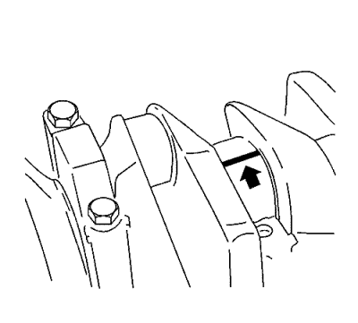
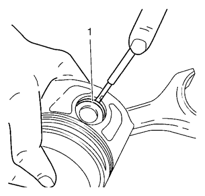
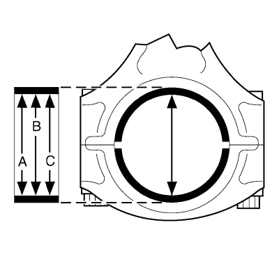
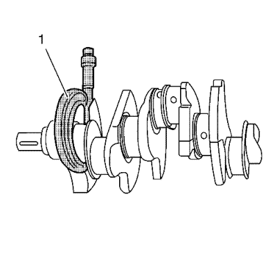
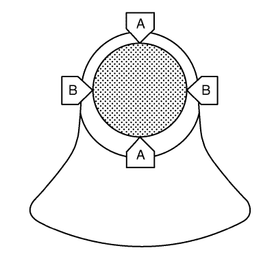

Limpieza e inspección de pistones, bielas y cojinetes
Herramientas especiales
EN-45059 Kit de goniómetro de par de apriete
Si desea informarse sobre herramientas regionales equivalentes, consultar Herramientas especiales .
Compruebe la holgura del cojinete de biela (con Plasti(gauge))

Nota: No gire el cigüeñal.
- Coloque un Plasti(gauge) adecuado (hilo plástico flexible) en toda la anchura del muñón del cojinete de biela.
Precaución:Consulte Precaución con las fijaciones en la sección Prólogo.
- Monte el sombrerete del cojinete de la biela.
- Apriete los 2 tornillos en tres pasos:
| 3.1. | En el primer paso, apriételos a 25 N·m (19 lib. pie). |
| 3.2. | En el segundo paso apriételos a 90° con el goniómetro EN-45059 |
- Desmonte los tornillos del sombrerete de cojinete de biela.
- Desmonte el sombrerete del cojinete de biela.

Nota: Al leer el valor, no confunda los milímetros con las pulgadas de la escala de medición.
- Mida el juego del cojinete de biela.
| • | Compare la anchura del hilo plástico aplastado con la escala de medición. |
| • | Juego permitido del cojinete de biela: 0,09-0,32 mm (0,004-0,014 lib. pulg.). |
Comprobación del juego del cojinete de biela (con micrómetro de interiores)

- Mida los diámetros de los cojinetes de biela en 3 puntos (A, B y C) con el micrómetro de interiores.
- Calcule el diámetro medio de la biela.
Fórmula: A + B + C /3.

- Mida con el tornillo micrómetro en los puntos I y II (1).

- Mida el diámetro del muñón del cojinete de biela en 2 puntos.
Fórmula: I + II/2.
- Calcule el diámetro medio del muñón del cojinete de biela.
- Determine el juego del cojinete de biela.
Fórmula para el cálculo: diámetro medio del cojinete de biela – diámetro medio del muñón del cojinete de biela.
- Compare el valor nominal / real.
Juego permitido del cojinete de biela: 0,09-0,32 mm (0,004-0,014 lib. pulg.).
| © Copyright Chevrolet. All rights reserved |